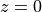

Basic example¶
This basic example is available in the examples/mcml/basic.py file.
The functionality of layered Monte Carlo (MC) is available through the
xopto.mcml.mc module.
from xopto.mcml import mc
The layer stack¶
The layers of the medium can be defined through the
xopto.mcml.mclayer submodule. The layers are stacked along the
positive direction of the z coordinate axis.
The topmost and bottommost layers of the stack are used to describe the medium that surrounds the sample at the top and at the bottom surfaces, respectively. Therefore, at least three layers must be always defined, namely the two layers of the surrounding medium and one sample layer!
The bottom surface of the topmost layer (the surrounding medium) is located at coordinate . The positive direction of the z axis points in the direction of the sample layer stack.
The thicknesses of the topmost and bottommost layers will be automatically set to infinity regardless of the specified layer thickness.
Note that all the layers in the stack must use the same scattering phase
function model. A variety of scattering phase function models is available through the
xopto.mcml.mcpf submodule.
An example of a basic turbid sample of thickness d=10.0 mm, with
an absorption coefficient mua=1.0 cm -1, scattering
coefficient mus=50.0 cm -1, a Henyey-Greenstein
scattering phase function (Hg) with an anisotropy
g=0.8 and refractive index 1.33 is as follows.
layers = mc.mclayer.Layers(
[
mc.mclayer.Layer(n=1.00, d=np.inf, mua=1.0e2, mus=50.0e2, pf=mc.mcpf.Hg(0.0)),
mc.mclayer.Layer(n=1.33, d=10.0e-3, mua=1.0e2, mus=50.0e2, pf=mc.mcpf.Hg(0.8)),
mc.mclayer.Layer(n=1.00, d=np.inf, mua=1.0e2, mus=50.0e2, pf=mc.mcpf.Hg(0.0))
]
)
Note that the absorption coefficient mua, scattering coefficient
mus and the scattering phase function pf of the
topmost and bottommost layers are not used in the MC simulations, since the
photon packets are not propagated through the surrounding medium.
However, the refractive index n of the two outermost
layers is used to properly refract/reflect the photon packet at the layer
boundaries when launched by the source or when escaping the sample.
The value of the layer thickness d should be given in m and
the values of the scattering coefficient mus and absorption coefficient
mua in m -1.
The photon packet source¶
Different sources of photon packets are available through the
xopto.mcml.mcsource module. The following example creates a basic
line source (infinitely thin collimated beam) at the top sample
surface (x, y, z)=(0, 0, 0) with a perpendicular incidence (0, 0, 1).
source = mc.mcsource.Line()
The detector¶
The photon packets can be collected by a surface detector after exiting the
top or bottom sample surface. Different types of surface detectors are
available through the xopto.mcml.mcdetector module. Note that the
top and bottom sample surface can use different configurations and/or types
of detectors.
detectors = mc.mcdetector.Detectors(
top = mc.mcdetector.Radial(
mc.mcdetector.Axis(0.0, 10.0e-3, 1000, cosmin=np.deg2rad(20))
),
bottom = mc.mcdetector.Radial(
mc.mcdetector.Axis(0.0, 10.0e-3, 100)
)
)
In the above example, we create two radial detectors one at the top and one at the bottom sample surface. The spacing between the concentric accumulators of the radial detector at the top sample surface is set to 10 μm, while the spacing of the concentric accumulators at the bottom sample surface is set to 100 μm. Both detectors are accumulating photon packets from 0.0 to 10.0 mm. The detector at the top sample surface only collects photon packets that exit the sample within 20 o of the surface normal, while the detector at the bottom sample surface collects all the photon packets that exit the sample.
The OpenCL device¶
The OpenCL device that will run the MC simulations can be selected through the
xopto.cl.clinfo module. In the following example we pick the first
available GPU device.
gpu = clinfo.gpu()
The Monte Carlo simulator¶
Next, we create a Monte Carlo simulator instance from the created layer stack, photon packet source and detectors.
Optionally, we can limit the maximum simulation radius that is measured from the position of the photon packet source. In this example, we limit the simulation radius to 25 mm.
mc_obj.rmax = 25.0e-3
Finally, we can run the simulator instance with a given number of photon
packets (10,000,000 in this example) and collect the results. The simulator
returns three objects/results, namely the trace, fluence and detectors. Since
in this basic example we only use the surface detectors, the remaining two
results (fluence and trace) will be returned as None.
trace_res, fluence_res, detectors_res = mc_obj.run(10e6)
Note that the photon packets that exit the sample within the acceptance cone
but at a distance / radius that exceeds the maximum radius of the
detector will be accumulated in the last concentric ring of the
Radial detector.
Visualization of results¶
We can plot the simulation results using the matplotlib.pyplot module. For a better visualization of the reflectance/transmittance a logarithmic scale is used in the y axis of the plots.
fig, (ax1, ax2) = pp.subplots(2, 1)
ax1.semilogy(detectors_res.top.r*1e3, detectors_res.top.reflectance)
ax1.set_xlabel('Distance from source (mm)')
ax1.set_ylabel('Reflectance')
ax2.semilogy(detectors_res.bottom.r*1e3, detectors_res.bottom.reflectance)
ax2.set_xlabel('Distance from source (mm)')
ax2.set_ylabel('Reflectance')
pp.show()
Reflectance and transmittance collected by the surface detectors.
{kind=link}
The complete example¶
# -*- coding: utf-8 -*-
################################ Begin license #################################
# Copyright (C) Laboratory of Imaging technologies,
# Faculty of Electrical Engineering,
# University of Ljubljana.
#
# This file is part of PyXOpto.
#
# PyXOpto is free software: you can redistribute it and/or modify
# it under the terms of the GNU General Public License as published by
# the Free Software Foundation, either version 3 of the License, or
# (at your option) any later version.
#
# PyXOpto is distributed in the hope that it will be useful,
# but WITHOUT ANY WARRANTY; without even the implied warranty of
# MERCHANTABILITY or FITNESS FOR A PARTICULAR PURPOSE. See the
# GNU General Public License for more details.
#
# You should have received a copy of the GNU General Public License
# along with PyXOpto. If not, see <https://www.gnu.org/licenses/>.
################################# End license ##################################
from xopto.mcml import mc
from xopto.cl import clinfo
import numpy as np
from matplotlib import pyplot as pp
# creating the sample layer and the 2 layers of the surrounding medium
layers = mc.mclayer.Layers(
[
mc.mclayer.Layer(n=1.00, d=np.inf, mua=1.0e2, mus=50.0e2, pf=mc.mcpf.Hg(0.0)),
mc.mclayer.Layer(n=1.33, d=10.0e-3, mua=1.0e2, mus=50.0e2, pf=mc.mcpf.Hg(0.8)),
mc.mclayer.Layer(n=1.00, d=np.inf, mua=1.0e2, mus=50.0e2, pf=mc.mcpf.Hg(0.0))
]
)
# creating the source of photon packets
source = mc.mcsource.Line()
# creating surface detectors of backscattered or transmitted light
detectors = mc.mcdetector.Detectors(
top = mc.mcdetector.Radial(
mc.mcdetector.Axis(0.0, 10.0e-3, 1000),
cosmin=np.cos(np.deg2rad(20.0))
),
bottom = mc.mcdetector.Radial(
mc.mcdetector.Axis(0.0, 10.0e-3, 100)
)
)
# selecting the first available OpenCL GPU device
gpu = clinfo.gpu()
# creating a Monte Carlo simulator
mc_obj = mc.Mc(layers, source, detectors, cl_devices=gpu)
mc_obj.rmax = 25.0e-3
# running the MC simulation with 1,000,000 photon packets
trace_res, fluence_res, detectors_res = mc_obj.run(10e6)
# plotting the simulation results
fig, (ax1, ax2) = pp.subplots(2, 1)
ax1.semilogy(detectors_res.top.r*1e3, detectors_res.top.reflectance)
ax1.set_xlabel('Distance from source (mm)')
ax1.set_ylabel('Reflectance')
ax2.semilogy(detectors_res.bottom.r*1e3, detectors_res.bottom.reflectance)
ax2.set_xlabel('Distance from source (mm)')
ax2.set_ylabel('Transmittance')
pp.tight_layout()
pp.show()
You can run this example from the root directory of the PyXOpto package as:
python examples/mcml/basic.py